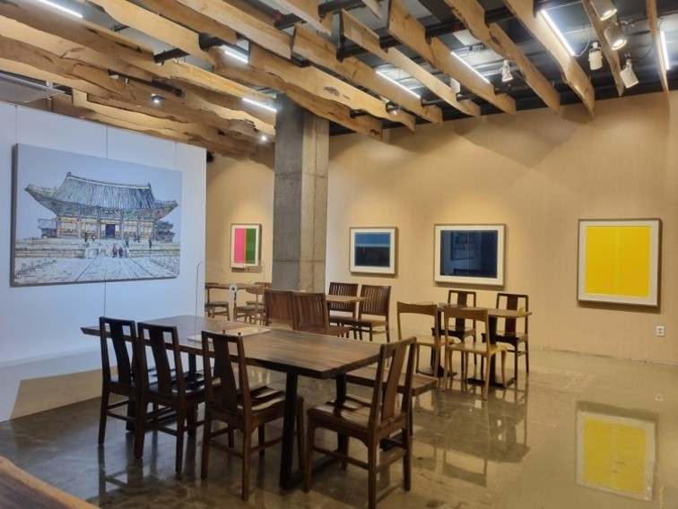

홍릉시험림
임업연구원 부속 전문 수목원으로, 1922년 고종의 비 명성왕후의 능이 있던 홍릉 지역에 임업시험장을 설립하면서 조성되었고, 전체 면적 44만㎡이다.

세종대왕기념관
조선시대 세종대왕의 성덕과 위업을 추모하고 이를 길이 보존하기 위해 세종대왕기념사업회에서 1970년 11월 준공하고 1973년 10월 개관하였다

서울풍물시장
전통과 현대가 공존하는 시장

8번가
경희대 복합문화공간 전시, 도서, 공연을 할 수 있는 카페